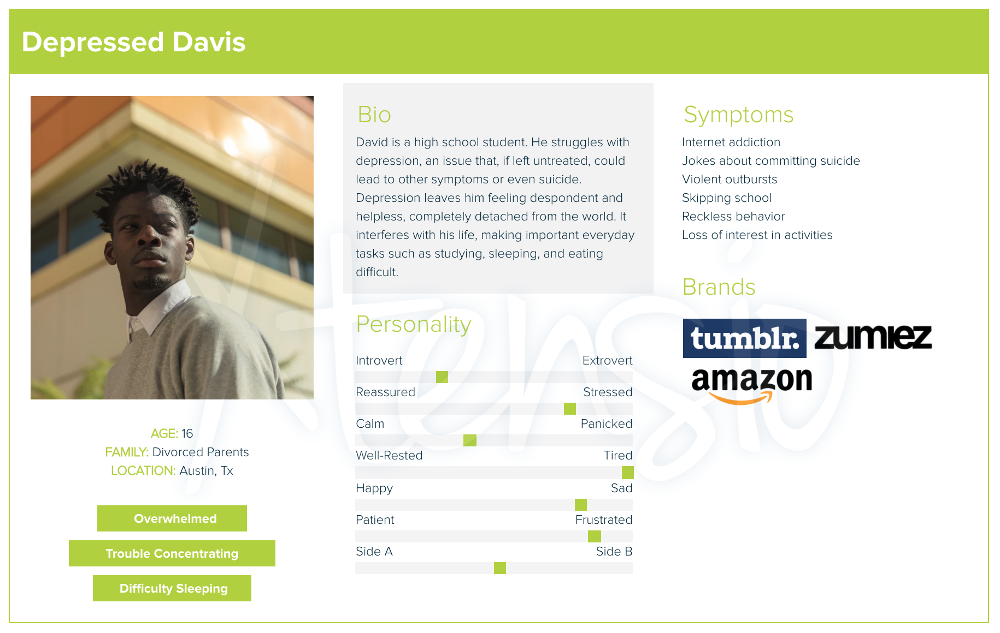
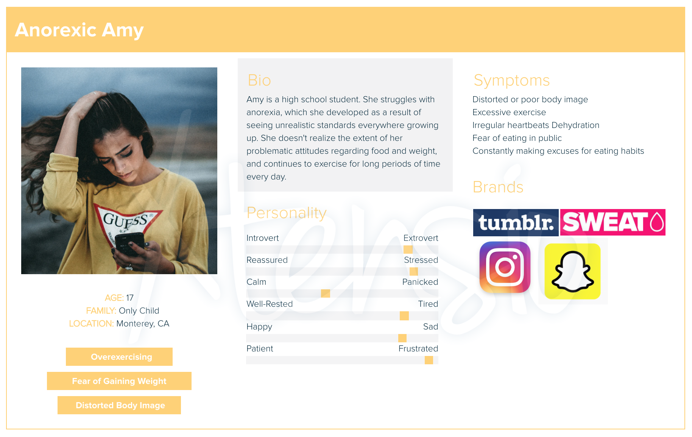
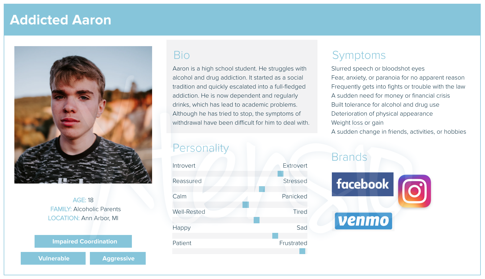
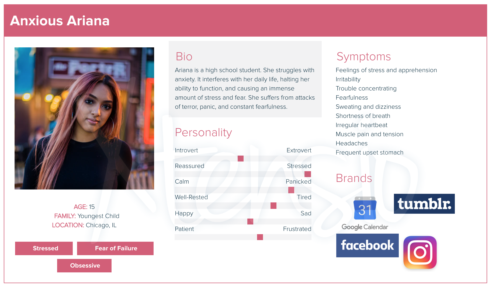

Target Audience Personas
There are many mental health issues prevalent in high school students. I have picked some of the most common and used them to create personas for teenagers who would greatly benefit from an education curriculum that teaches students about mental health.
   To create these personas, I used Xtensio and research from Best Colleges's "The Top Mental Health Challenges Facing Students" article. Analyzing these different personas has helped me see the wide range of young adults that this website could help. By raising awareness, teenagers like Depressed Davis, Anorexic Amy, Addicted Aaron, and Anxious Amy can get the support they need someday.